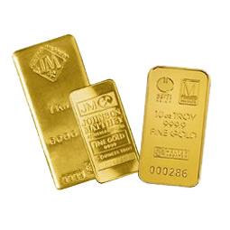

Урок №9
 Инвестирование в золото
Чем громче разговоры об экономических проблемах и возможном кризисе, тем сильнее дорожает основа основ — золото. В ожидании падения рынков, высокой волатильности валют и новых экономических санкций спрос на металл растет. Аналитики Societe Generale уверены, что через год актив подорожает до $1300 за унцию. Goldman Sachs еще более оптимистичен, и предрекает золоту рост до $1,425 долларов за 12 месяцев. Сегодня разберемся, стоит ли инвестировать в золото, как это сделать и какие подводные камни ждут инвестора.
На биржевом сленге металлы называют защитными активами. Это связано с их надежностью: сценарий, при котором золото или платина внезапно обесценятся, представить сложно. Что бы при этом ни происходило на фондовых и валютных рынках, металл всегда можно продать быстро и по хорошей цене. Подводные камни лежат в сфере регулирования, которое делает золото эффективным инструментом только при очень долгосрочных вложениях.
Золото можно разделить на две большие группы активов: физическое и бумажное. То есть: покупка живого металла или торговля производными финансовыми инструментами, привязанными к цене базового актива.
Физическое золото
Первое, что приходит на ум начинающему инвестору, — купить слиток. В России это можно сделать абсолютно легально почти в любом банке: слитки от 1 грамма до нескольких килограммов можно найти в свободной продаже. При покупке к золоту прилагается акт, где указывают название металла, пробу, вес, номер слитка, сумма, дату, ФИО покупателя и представителя банка.
Как правило, инвестиционное золото отличается от ювелирного именно пробой, то есть соотношением золота к примесям и другим металлам. В слитках оно составляет 999 к 1. Ювелирные изделия обычно делаются из золота 585 пробы, то есть в килограмме сплава будет 585 грамм чистого золота.
К слитку обязательно прилагается сертификат изготовителя. Без него банк откажется выкупать металл назад. В России производить чистое золото в слитках имеют право всего одиннадцать компаний, которые перечислены в постановлении (3) правительства. Актуальную стоимость драгоценных металлов можно найти на сайте Центробанка (4) России рядом с курсами валют.
Банки всегда продают золото дороже, чем покупают, извлекая прибыль из разницы цены. При покупке вам придется еще и заплатить НДС (18%, а с 2019 — 20%), который при обратной продаже не возвращается. Чтобы только окупиться, физическое золото должно подорожать примерно на четверть. Этого можно ждать десятилетиями.
«Бумажное» золото - Обезличенные металлические счета
Это счет в банке, где указано количество драгметалла, которым владеет клиент, но не указаны его физические характеристики (проба, слитки, производитель и другие). Такие счета гарантируют их владельцу право требования того количества металла, которое он купил.
Открывать их можно как за рубли, так и сдав в банк слитки золота или других драгметаллов. НДС виртуальный металл не облагается. Издержки сделок заключаются лишь в разнице курсов покупки и продажи, установленных банком. Платить за ячейку, где хранились бы материальные драгметаллы, — не нужно.
Забрать домой физический металл тоже можно, но тогда НДС с него придется уплатить. Стоит помнить, что система страхования вкладов с ОМС не работает, поэтому открывать такой счет можно только в очень надежных организациях.